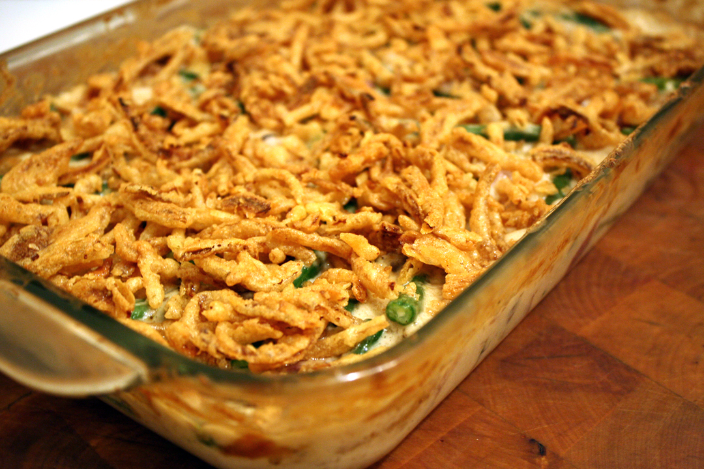

Green Bean Casserole
Description
Green bean casserole has been a favorite of mine since childhood. It's creamy, cheesy, crunchy, fresh and super easy to make! It only takes a few minutes of prep and about 30 minutes of cook time --- depending on your oven of course.
So without further ado, let's dive in to the recipe!
Ingredients
- One large can of cream of mushroom soup
- Four small cans of green beans
- Two to four packages of crispy french onions
- Cheddar cheese
Steps
- Preheat your oven to 350 degrees.
- Carefully open all the cans
- Drain three all the canned green beans, keeping 1-2 cans of the water from the green beans in reserve.
- In a large baking pan or oven safe skillet, add the cream of mushroom soup and green beans. Mix evenly.
- Take half of the french onions and mix them in with green beans.
- Take the reserved water and gradually mix it in with the ingredients in the pan to your desired thickness. However, be careful not to make it too runny or you run the risk of the casserole not holding together well.
- Place the dish in the oven for 15-20 minutes.
- Shred the cheese.
- After the initial bake time, add the remainder of the french onions to the top of the dish and place it back in the oven for another 5-10 minutes. Watch it carefully so as not to burn the top layer of onions.
- Once the bake time is over, take the casserole out of the oven and let it rest for about 2-5 minutes.
- Serve it up on a plate add cheese and enjoy!